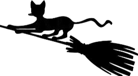

Documentation
Purr v1.0
Introduction
Purr is an open-source ETL tool which transfers data from MongoDB to PostgreSQL.
Purr is the right choice if you want to
- migrate from MongoDB to PostgreSQL
- use BI tools like Periscope but stay keep using MongoDB at the same time
Purr is released under the terms of the [...] License, allowing [...]
Check the features list to see what Purr offers.
Download
Download the source package or download Purr from Github
The current stable Purr release is 1.0.0
pip install purr
Support
MongoDB 3.4
PostgreSQL 9.6
Quickstart
-
Install Purr using pip:
pip install purr - Start Mongo as a replica set
-
You will need a collection map to describe your schema.
Generate the collection map:
purr -m -mdb mongodb://localhost:27017 -n db_name - start Postgres
-
On the command line type:
purr -cf collections.yml -pg postgres://127.0.0.1:5432/postgres -mdb mongodb://localhost:27017 -n db_name -t
Purr transfers all collections to the public schema and starts tailing the oplog.
Make changes to any of your documents and check what happens in your Postgres database.
Setup
After installing Purr, you will need a collection map to describe your schema. Without the collection map you can not start Purr. Once you created your collection map, you should have a running MongoDB instance as a source and Postgres as a target database. You can start Purr using command line options or you can create another YAML file to organize your settings. The collection map and the setup file should not be mixed.
Setup file
-h, --help show help message
-sf, --setup-file
The setup file must contain:
- settings for Postgres
- settings for MongoDB
- general settings
Settings for Postgres:
db_name: name of databaseconnection: connection string to database-
schema_name: name of schema where the collections will be transfered to -
schema_reset:- true: reset existing schema
- false: keep existing schema
-
table_truncate: truncate table before starting data transfer -
table_drop: drop table before starting data transfer
Settings for MongoDB
db_name: name of databaseconnection: connection string to database
General Settings
-
tailing: keep tailing the oplog after collection transfer is finished -
include_extra_props: include properties which are not described in the collection map
purr -sf path/to/setup.yml -cf path/to/collections.yml
Command line options
You can set all the variables from the previous section using the command line. Passing connection strings to MongoDB and Postgres is mandatory.
-
-sfor--setup-file: path to the setup file if exists -
-cfor--collection-file: path to the collection file if exists -
-tdor--table-drop: defaults to false -
-ttor--table-truncate: defaults to false -
-sror--schema-reset: defaults to false -
-snor--schema-name: defaults to public -
-pgor--pg-connection: connection string to PG database (*) -
-mdbor--mongo-connection: connection string to Mongo database (*) -
-nor--mongo-db-name: equivalent of db_name for MongoDB (*) -
-tor--tail: equivalent of tailing; defaults to false -
-sor--start: equivalent of tailing_from; type should be date, defaults to None -
-tsdbor--start-from-tsdb: equivalent of tailing_from_db; defaults to false -
-exor--include-extra-properties: defaults to false
Starting Purr without using a setup file:
purr -cf path/to/collections.yml -pg
postgres://127.0.0.1:5432/postgres -mdb mongodb://localhost:27017
-n mongo_db_name -t
Variables followed by (*) are mandatory.
Example setup.yml
postgres:
db_name: my_pg_database
connection: postgres://127.0.0.1:5432/postgres
schema_name: maine_coon
schema_reset: false
table_truncate: false
table_drop: false
mongo:
db_name: my_mongo_database
connection: mongodb://localhost:27017
tailing: true
include_extra_props: true
Collection Map
-cf, --collection-file
The collection map is a YAML file which contains information about the database and the collections you want to transfer. Only the collections that are described here will be loaded to your Postgres database, other collections will be ignored.
The collection map should have the following structure:
mongo_database_name:
Collection1:
:columns:
- column1:
:source: field1
:type: TEXT
- column2:
:source: field2
:type: TEXT
:meta:
:table: collection1
:extra_props: JSONB
Collection2:
:columns:
- column3:
:source: field3
:type: TEXT
- column4:
:source: field4
:type: TEXT
- ...
:meta:
:table: collection2
:extra_props: JSONB
Example setup.yml
my_mongo_database:
Cat:
:columns:
- id:
:source: _id
:type: TEXT
- name:
:source: name
:type: TEXT
- active:
:source: active
:type: BOOLEAN
- number_of_legs:
:source: numberOfLegs
:type: DOUBLE PRECISION
- created_at:
:source: createdAt
:type: TIMESTAMP
:meta:
:table: cat
:extra_props: JSONB
Explanation: When connecting to the Mongo instance, Purr looks for the database name in the collection map (my_mongo_database). Collection Cat will be transferred to table cat (described under meta -> table). This table will have 6 columns with the following types
id: text
name: text
active: boolean
domains: jsonb
created_at: text
extra_props: jsonb
Data Types
Purr uses 5 different data types when creating rows for a table:
- boolean
- double precision
- text
- timestamp
- jsonb
Type Conversion
Restarting Purr after changing the types in a collection map: When Purr reads the new collection map, it compares it to the old one and tries to update the column types. Sometimes it is not possible because Postgres cannot cast all the values. In that case, Purr will log an error.
The following table shows which conversions can happen without an error
| boolean | double precision | text | timestamp | jsonb | |
|---|---|---|---|---|---|
| boolean | ✓ | ✓ | ✓ | ||
| double precision | ✓ | ✓ | ✓ | ||
| text | ✓ | ✓ | |||
| timestamp | ✓ | ✓ | ✓ | ||
| jsonb | ✓ | ✓ |
Conversions that have ✔, can be easily handled by Postgres. When you assign a new type and your data is not castable to your new type, Purr will have to handle that situation on its own. Purr will rename your inconsistent column to column_name_old and create a new one with the new data type under column_name. This way we can make sure that you will not lose any data and you can continue working on your new column. Purr will restart collection transfer for that specific collection and will try to cast your values so they fit into your new column. If casting cannot be done, you will have NULLs instead of a value.
Keeping the old version of your column gives you more control over your data: you decide what to do with the values which could not be casted and inserted into the new column. When you re-run Purr again, your old column will be deleted since it's not part of the collection map. Feel free to drop the old column at any moment (if you are sure that you don't need it).
When you are tailing and a type change happens in your Mongo database, Purr will try to cast your data to the current column's type. If not succeeded, Purr will log a warning and continue tailing.
Extra properties
Extra properties are properties of a document in MongoDB which do not have their name, source and type in the collection map. Having extra properties means that values which are not defined in the collection map will be part of a column named extra_props with type defined based on the collection map. Leaving out extra properties from the collection map will make extra_props type default to JSONB.
In case that you want to include extra properties you have to start Purr with option -ex.
If you already have an extra_props column but you restarted Purr without this option, all columns named extra_props one by one.
- drop column extra_props for Collection1
- drop columns that are not in the collection map
- start transfer ... and so on for the other collections
Starting Purr without extra properties can be significantly faster.
Example: start Purr using a setup file and collections described in collections.yml
purr -sf setup.yml -cf collections.yml
Example: start Purr without setup file (tailing mode)
purr -cf collections.yml -pg postgres://127.0.0.1:5432/postgres
-mdb mongodb://localhost:27017 -n db_name -t
If -t is set, Purr starts tailing the oplog after transferring all the collections described in the collection map. The oplog is a capped collection that records all write operations that happened in your Mongo instance. Tailing is started from the timestamp Purr saved in the beginning (before it created purr_info). Tailing has to happen after all the tables were created since there may be write operations on a collection that was not yet transferred and therefore it's corresponding relation does not yet exist.Start Mongo as a replicaset.
Generating the map NEW
Writing a collection map might be exhausting, especially when there are lots of collections to transfer. Generating the collection map can save a lot of time. Here is how it works:
When starting Purr, by adding the flag
-m (--map) and the Mongo connection
information:
purr -m -mdb mongodb://localhost:27017 -n db_name
Purr generates the YAML file with the collection definitions. In case the data file can be changed before starting the data transfer Here are some things to keep in mind for generating a collection map:
-
Purr expects collection and field names in camelCase and outputs
them in snake_case. This may cause some issues when a document
has
_idandidfields, both will be converted toid. Having two columns with the same name is not possible in Postgres, therefore duplicates are not allowed in the collection map and any reoccurences of the same column names will be ignored.name_db: name_coll: :columns: - :source: _id :type: TEXT id: null - :source: jellyFish :type: TEXT jelly_fish: null -
there is no output for extra properties
Note: we may add them later
-
a generated collection map will have a column name equal to
nullwhich can be left out when writing the collection map alone:name_db: name_coll: :columns: - :source: _id :type: TEXT id: null - collections with no documents are skipped
- Purr takes a collection sample which consists of the last 100 documents of each collection and checks each key and value it finds. After that, it determines the type for each value in a document and records it. If inconsistent data was found and values with different types belong to the same key, Purr will choose the type which occured the most frequently.
After generating the collection map, start the data tranfer as explained earlier.
Updating the map
Sooner or later you will need to change your collection map. If you restart Purr and keep your existing schema, your tables' fields in PG will be compared to the ones in your collection map.
- Adding a new attribute will make Purr update your entire collection.
- Removing an attribute drops the column.
- Changing a column name will drop the old column, create the new one and update your entire collection.
- Changing a column type will result with an attempt to ALTER the column. If the attempt was unsuccessful, Purr will try to convert your data to JSONB.
What about the tables in my Postgres database that were in the schema before using Purr?
If you have any existing tables in your schema that you want to be left alone, make sure that you
- don't include those tables in your collection map as a target (:meta: :table: cat)
- set schema_reset to false
- set table_drop to false
- set table_truncate to false
Tailing
There are two types of tailing:
- tailing which is preceded by collection transfer
- tailing from specific timestamp (only if collections exist)
Tailing without collection transfer must have a starting point
defined by the user. This starting point can be a timestamp which
can be passed using -ts datetime. Purr creates a
table called purr_info where it saves the current Unix epoch time.
This timestamp is updated every couple of minutes. The update
happens only if the current document is successfully transfered.
When an error occurs, you can be sure that Purr saved the latest
successful timestamp to purr_info and can continue tailing the
oplog from -tsdb. purr_info is always created when you first start
Purr. If you do not add any timestamps to -s:
- the current timestamp will be inserted
- it will read the latest timestamp and check if the oplog has any new entries
- if the timestamp is "too old", Purr updates all collections
if the timestamp is "too old", Purr updates all collections
- the latest timestamp will be inserted into purr_info
Output
Purr will log a warning if it could not transfer a document.
Connectivity issues
When starting for the first time, Purr creates a table called purr_info. This table contains a timestamp which is refreshed every couple of minutes in case of a successful transfer. If Purr is disconnected from the database, it waits a couple of seconds before attempting to reconnect. If succeeded, Purr first checks purr_info for the latest timestamp it managed to save and continues tailing from there.
Contribute
Purr is an open-source project that was built using Python3. If you would like to contribute, check out our guidelinesOur most valuable contributors
Towelie
helps us think out of the box
Kenny McCormick
specializes in removing dead code

Kyle Broflovski
makes sure we learn something every day
Guidelines
Contributing to Purr is a great way to learn more about MongoDB, Python and PostgreSQL
PEP 8 Conventions
To make sure you follow PEP 8, use
pycodestyle
(previously pep8`). Pycodestyle is a tool that checks
your code against style conventions in PEP 8.
Unused Code
We like to clean up our code to make sure that no unused functions were left behind. We expect you to do the same so the code can be cleaner, easier to understand and also easier to maintain. Vulture is a great tool to eliminate unused code. Remember, YAGNI :)
def unused_function():
print("Please delete me!")

Commit Guidelines
A good practice Vulture is a great tool to eliminate unused code. Remember, YAGNI :)